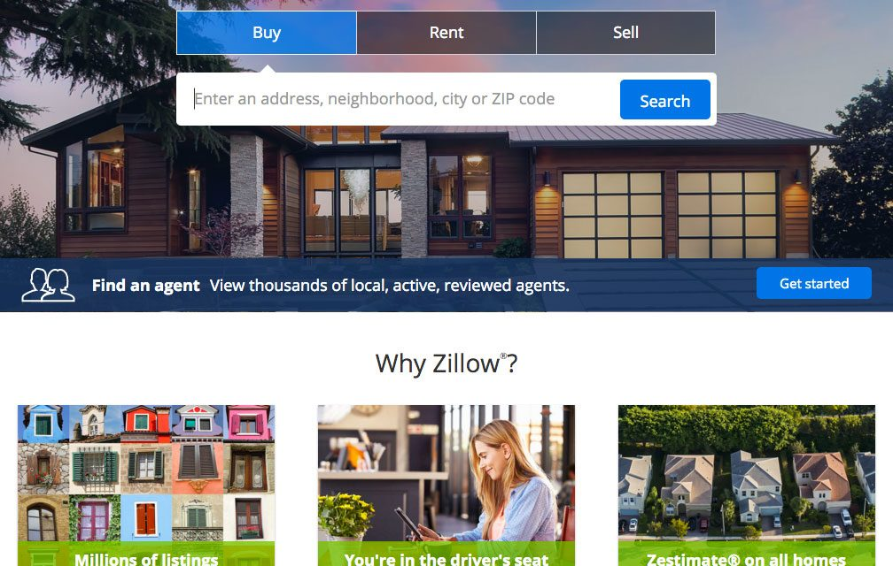
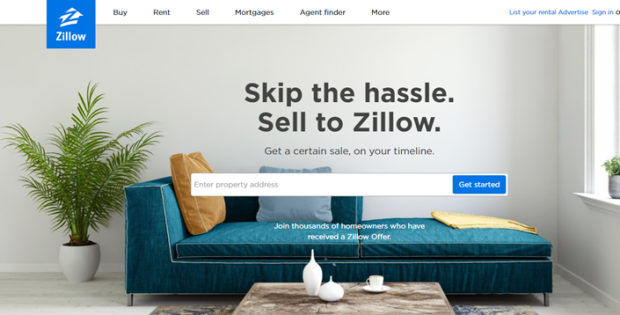
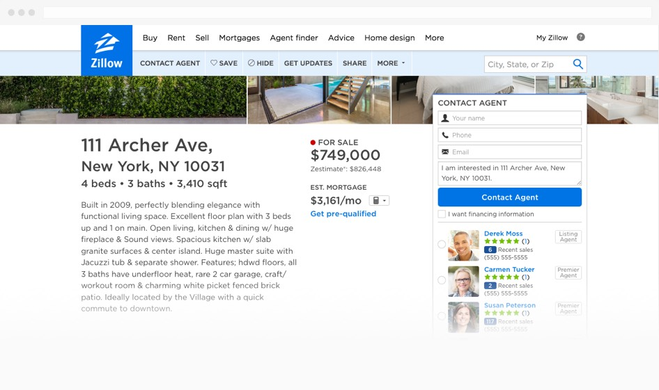
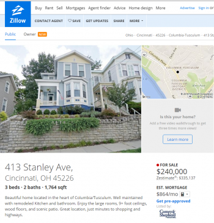
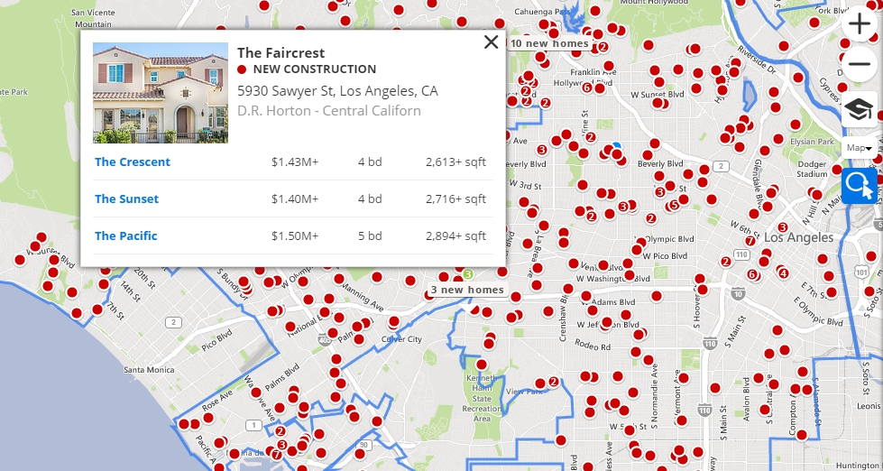

The second website I chose is Zillow which is a popular real estate service that many people use to search for compare price in their neighbor’s home and search for their home or apartment.
Top

The website is clutter free and responsive. The interface of the website contains a few basic elements. A search bar to enter address, city or zip code for customer to find details listing of properties for sale and for rent. The website has an advanced search function which really important for real estate website. it helps users quickly get the most relevant results. The page also has the save and store functions that make it easy for users to find the results later on. Overall, the page makes it easy for new user to quickly select and search listings without looking for some hidden search page.
Rating: 4/5
Top

The app has the simplicity of design. Users are able to find all the function as fast as possible when they are using the app. The app also has good library of photo which has all the details about the house. Users are able to access to all of the photo where the house is depicted. Zillow app also utilizing the iPhone's GPS functionality, the app pinpoints a user's location and shows nearby homes on interactive aerial maps. The app also shows estimated home values, historical property records, for-sale listings, and photos. The app has ads from the bottom of the house detail page but it doesn’t make any distraction because the user won’t see it until they look at all the information about the house.
Rating: 4/5
Top

The page’s content has a simple UI with the use of large visuals and clear use of information where needed. The page also contains Virtual tours, which allows customers to explore the property without leaving the application. The page uses light blue and dark blue and white color to made it easy to view the menu bar and separate each section of the page
Rating: 4/5
Top

The page has a detail listing profile with photos, prices, descriptions and also a profile template for users. It also integrates an easy registration system for users. They develop the app with welcome sign in and sign up screen that briefly and clearly describe the app to users and help them register. Users also can sign up with their google and Facebook account.
Rating: 4.5/5
Top

My suggestion is the Zillow should update their housing database more often. Some of the house’ pricing, status, HOA fee are inaccurate because users wants the latest and the most accurate information.
Rating: 3/5
Top